Gracias por elegir Circuito. Este librito explica cómo se juega, qué es cada pieza
y por qué la electricidad las recorre en un orden.
LÉELO CON UN ADULTO
El juego está hecho para chicos de 6 a 8 años, y se puede jugar sin saber leer: todo se entiende
mirando colores, dibujos y animaciones. Este manual es para la persona grande que acompaña,
o para el jugador que ya lee y quiere saber por qué.
Para jugar necesitas
Una computadora, tableta o celular con navegador. En el celular, ponlo acostado
(horizontal). No hay nada que instalar.
Cuánto se juega
Hasta 10 niveles nuevos por día. Repetir los que ya pasaste no gasta ese cupo.
Es a propósito: los circuitos se aprenden mejor de a poco.
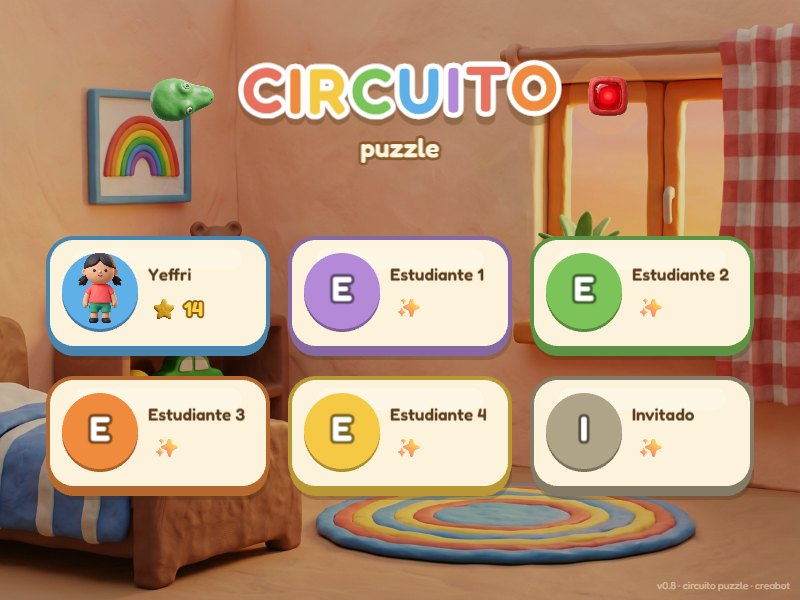
elige tu tarjeta (¡y tu personaje!)
← la primera vez te pregunta si juegas con el nene o con la nena
La primera vez, te llevan de la mano
Un perfil nuevo empieza con un recorrido guiado, sin letras: un fantasma de tu personaje camina
hasta el banco de trabajo, el juego resuelve solo el primer nivel para que veas cómo se hace, y después
juegas los primeros 5. Al terminarlos aparece la tienda en tu cuarto y te espera un regalo:
un mueble gratis para estrenar. Desde ahí, juegas libre.
3
CIRCUITOLA HISTORIA
La historia de la serpiente
En el banco de trabajo de tu cuarto vive una serpiente de plastilina muy especial:
es la corriente eléctrica.
Cuando toca una batería, se llena de energía y el cuerpo se le pone amarillo y chispeante.
Esa energía viaja por todo su cuerpo hasta la cabeza.
Tu misión es guiarla por el tablero para que su cuerpo quede apoyado sobre cada pieza
del circuito, en el orden justo. Cuando lo logras, la electricidad llega hasta el final y…
¡SE PRENDE LA LUZ!
¡hola! soy la corriente 〜
este es el premio
¿Por qué una serpiente?
Porque en un circuito como estos la corriente recorre un solo camino, sin ramas, igual que el
cuerpo de una serpiente. Los electricistas lo llaman circuito en serie.
4
CIRCUITOCONTROLES
Controles
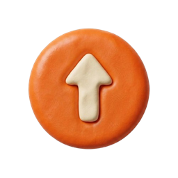
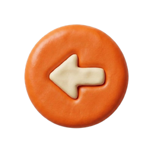
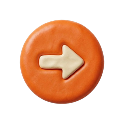
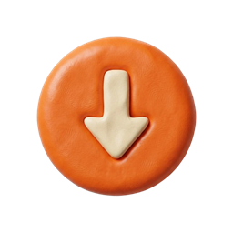
en la pantalla o en el teclado
Haces esto
Pasa esto
←→↑↓
Te mueves. En el puzzle, la serpiente avanza una casilla por toque.
E o tocar la burbuja
Usas lo que tienes cerca en el cuarto.
R o el botón ↻
Empiezas el nivel de nuevo.
Tocar un interruptor
Lo cierras para que pase la corriente.
NO HAY LETRAS EN LOS BOTONES
Todos los botones tienen un dibujo: la casita vuelve al cuarto, el mapa abre los niveles,
la flecha redonda reinicia, el foco da una pista y el parlante apaga el sonido.
Si un botón se sacude y hace "bonk", es que ahora no se puede.
5
CIRCUITOTU CUARTO
Tu cuarto
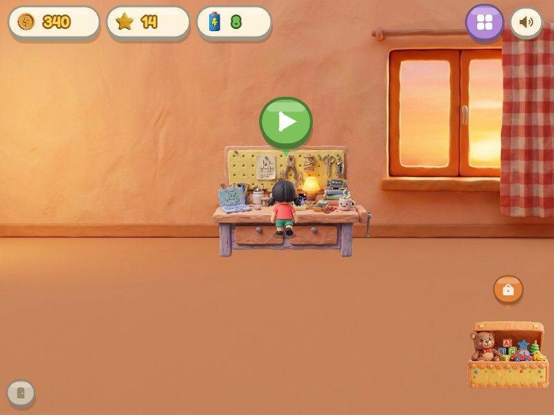
acércate al banco y aparece el botón ▶
BANCO DE TRABAJOCamina hasta él. La burbuja verde crece: tócala (o la tecla E) y entras al próximo nivel.
LA TIENDAEl baúl de juguetes. Ahí gastas tus monedas (página 19).
ARRIBATus
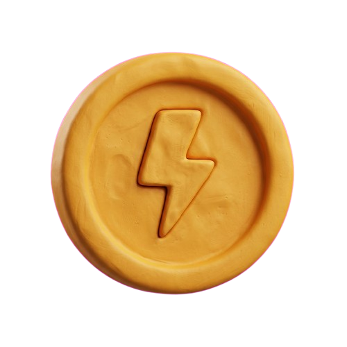
monedas, tus
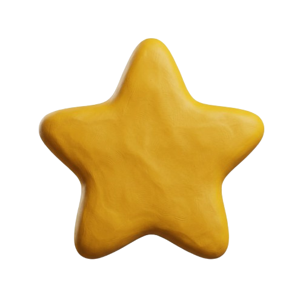
estrellas y tu
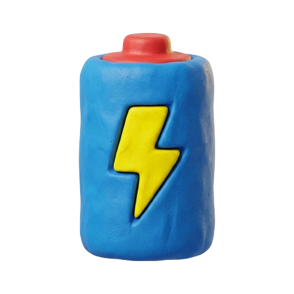
energía: los niveles que te quedan hoy.
los muebles que compres aparecen acá ✓
6
CIRCUITOEL TABLERO
El tablero
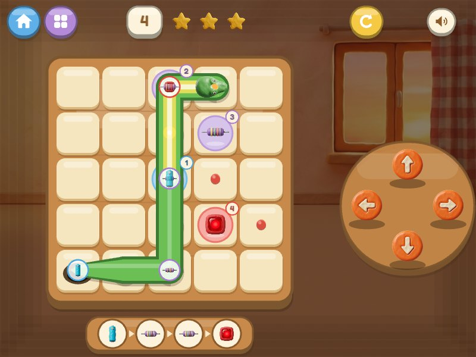
Casita — volver al cuarto.
Mapa — elegir otro nivel.
Número de nivel.
Estrellas en vivo — si das demasiados pasos, se caen. ¡Cuídalas!
Empezar de nuevo.
Sonido sí / no.
Las flechas.
La bandeja: las piezas en orden. Se marcan con ✓ cuando quedan conectadas.
La cueva por donde entra la serpiente.
Piedritas: el camino que conviene seguir.
mirá: ¡ya tiene luz!
7
CIRCUITOLAS REGLAS
Las reglas de la serpiente
1 · Sale de la cueva
Al empezar, la serpiente está toda enrollada en una casilla: sólo ves la cabeza. Cada paso
que das, un pedacito más de cuerpo sale de la cueva detrás de ella.
2 · Nunca hacia atrás
No puede salirse del tablero ni pisar su propio cuerpo. Si lo intentas, se golpea la nariz
(bonk) y no se mueve.
3 · Lleva piezas en el lomo
Mira bien su cuerpo: algunas partes llevan una bolita con una pieza dibujada. Esa parte
del cuerpo tiene que terminar exactamente encima de la pieza igual en el tablero.
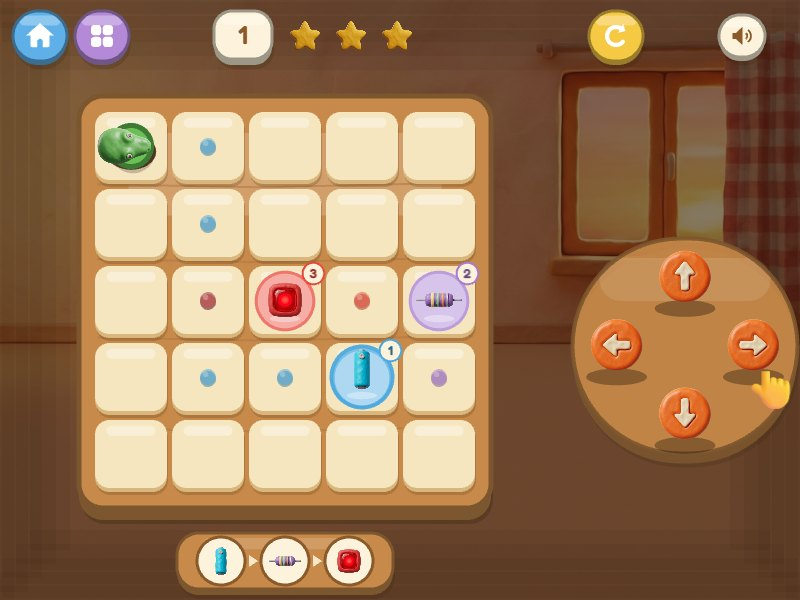
nivel 1: toda enrollada en la cueva
4 · ¡A encender!
Cuando cada parte está en su lugar, el circuito se cierra, el LED se prende y ganas.
Si hay interruptores, al final tienes que tocarlos para cerrarlos.
la manito 👆 aparece si te quedas quieto en los primeros niveles
8
CIRCUITOLOS COMPONENTES
Los componentes
Un componente es cada pieza de un circuito. En Circuito hay cinco.
Todos son de verdad: los vas a encontrar dentro de juguetes, linternas y computadoras.
Batería da la energía
Resistencia frena la corriente
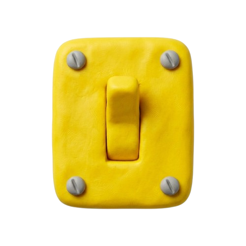
Interruptor abre y cierra el paso
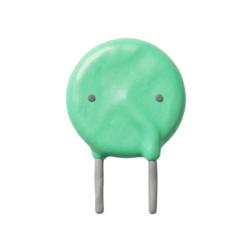
Capacitor guarda un poquito de energía
LED se ilumina
¡CINCO PIEZAS!
EL CÍRCULO DE COLOR
Cada pieza del tablero descansa en un platito de su color: azul la batería, lila la resistencia,
amarillo el interruptor, verde menta el capacitor y rojo el LED. Los chicos que no leen se guían
por eso, no por los números.
9
COMPONENTESLA BATERÍA
La batería
1
BATERÍA
APARECEen todos los niveles
POSICIÓNsiempre primera
ENERGÍA
EN LA VIDA REAL
Es una cajita que guarda energía química y la convierte en electricidad. Tiene dos lados:
el positivo (+) y el negativo (−). Cuando los unes con un camino de cables, la
corriente sale por un lado, recorre el camino y vuelve por el otro. Esa vuelta completa es un
circuito (de "círculo").
EN EL JUEGO
Es el enchufe de la serpiente. En cuanto la toca, el cuerpo se llena de chispas amarillas
desde ese punto hacia la cabeza. Siempre es la pieza número 1 y la que salta primero
para decirte "¡ven aquí!".
truco: ve derechito a la batería. todo lo demás se arma después →
10
COMPONENTESLA RESISTENCIA
La resistencia
…
RESISTENCIA
APARECEdesde el nivel 1
POSICIÓNen el medio
FRENO
EN LA VIDA REAL
Es como un tubo angosto en una manguera: deja pasar el agua, pero menos. La resistencia
frena la corriente para que no llegue con demasiada fuerza. Las rayitas de colores son un
código secreto que dice cuánto frena.
EN EL JUEGO
Aparece en todos los niveles, a veces dos o tres seguidas. Va entre la batería y el LED:
su trabajo es cuidar a la luz.
PARA EL ADULTO
Un LED conectado directo a una pila de 9 V se quema en un instante: deja pasar toda la corriente
que puede. La resistencia "en serie" la limita. Es la primera regla que aprende cualquiera que
arma circuitos con LEDs, y por eso el juego nunca arma un circuito sin ella.
11
COMPONENTESEL INTERRUPTOR
El interruptor
…
INTERRUPTOR
APARECEdesde el nivel 11
POSICIÓNdonde diga su número
PODER
EN LA VIDA REAL
Es el botón de la luz de tu casa. Abierto, el camino tiene un hueco y la corriente no puede
cruzar, como un puente levadizo levantado. Cerrado, el puente baja y pasa.
EN EL JUEGO
Si la serpiente pasa por un interruptor abierto, las chispas se frenan ahí y no llegan a la
cabeza. Cuando todas las piezas están en su lugar, el interruptor larga ondas blancas:
tócalo y el circuito se completa.
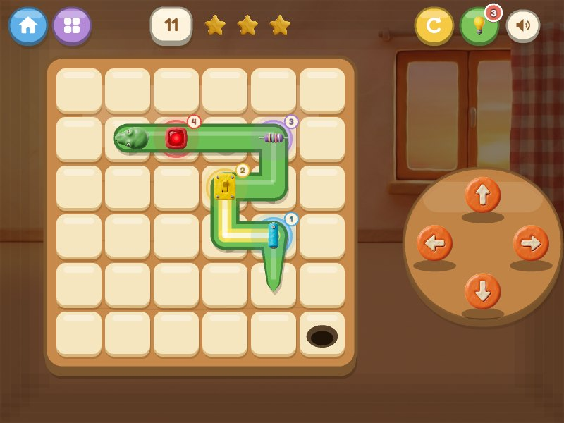
todo en su lugar… ¡ahora toca el amarillo!
12
COMPONENTESEL CAPACITOR
El capacitor
…
CAPACITOR
APARECEtablero 8×8 (nivel 41+)
POSICIÓNen el medio
GUARDA
EN LA VIDA REAL
Es como una esponja de electricidad: se llena rapidito y después suelta lo que guardó. Lo
usan los flashes de las cámaras para hacer un destello fuerte, y las computadoras para que la
energía llegue pareja.
EN EL JUEGO
Es el componente de los expertos: aparece recién en el tablero grande de 8×8, donde los caminos
son largos y hay que planear mucho.
PARA EL ADULTO
Aquí el juego simplifica. Con una pila, un capacitor puesto en serie sólo deja pasar corriente
mientras se carga: el LED daría un destello y se apagaría. En el juego se comporta como una
pieza más del camino. Si el chico pregunta, es una excelente pregunta.
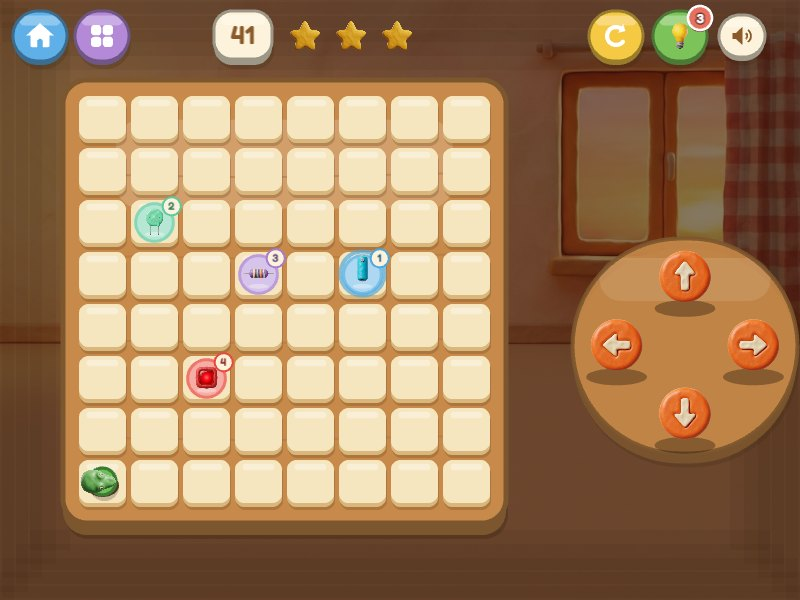
13
COMPONENTESEL LED
El LED
FIN
LED
APARECEen todos los niveles
POSICIÓNsiempre última
BRILLO
EN LA VIDA REAL
LED quiere decir "diodo que emite luz". Es una lucecita que gasta poquísima energía; están en
los semáforos, en los controles remotos y en las pantallas. Tiene una manía: sólo deja pasar
la corriente en un sentido. Si lo pones al revés, no prende. Por eso tiene una patita más larga
(la que va del lado +).
EN EL JUEGO
Es la meta. Siempre es la última pieza. Cuando la corriente lo alcanza, se enciende con un
sol rojo, caen las estrellas y se acaba el nivel.
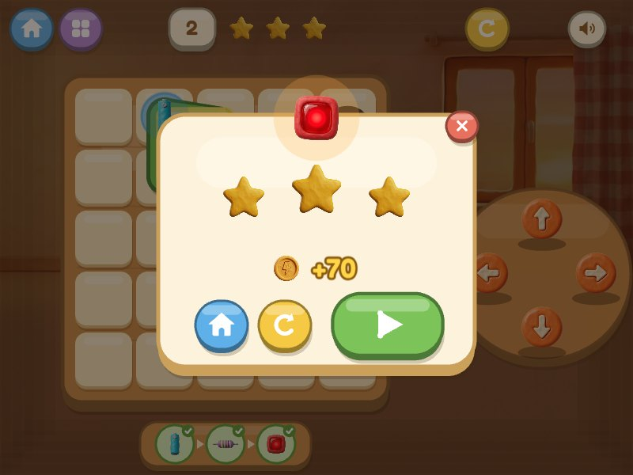
14
CIRCUITOEL ORDEN
¿Por qué en ese orden?
En todos los niveles las piezas tienen número, y la serpiente las tiene que recorrer así:
BATERÍA
→
RESISTENCIA
→
INTERRUPTOR
→
CAPACITOR
→
LED
(las del medio cambian según el nivel: su número dice cuál va antes)
1 · La batería va primero porque es el principio
La corriente no aparece de la nada: sale de la batería. Seguir un circuito es como leer un
cuento: se empieza por el principio. Por eso la serpiente primero va a buscar su energía.
2 · El LED va último porque es la prueba
Si el LED prende, quiere decir que la corriente pudo pasar por todas las piezas anteriores.
Si alguna faltara o el camino estuviera cortado, la luz no llegaría. Por eso la luz es la línea de llegada.
3 · La resistencia va antes del LED para cuidarlo
Así lo arman los electricistas: + → resistencia → LED → −. Primero se frena la corriente
y recién después llega a la lucecita, que es delicada.
15
CIRCUITOEL ORDEN (CONT.)
Lo que la serpiente sabe
el nivel 1 dibujado como lo dibuja un ingeniero
¡el camino es un círculo! → circuito
La cola se queda en la batería
Cuando ganas, la cola de la serpiente queda junto a la batería y la cabeza junto al LED:
su cuerpo es el cable que une todo, en el mismo orden en que viaja la corriente.
¿Y el interruptor?
En la vida real puede ir en cualquier lugar del camino: abierto, corta todo. En el juego su
número te dice dónde le toca.
PARA EL ADULTO · LA VERDAD COMPLETA
En un circuito en serie la corriente es la misma en todos los puntos, así que eléctricamente la
resistencia protegería al LED también si estuviera después. Además, un circuito real tiene que volver
al polo negativo de la batería para cerrarse; la serpiente no dibuja esa vuelta.
El orden fijo del juego no es una ley de la física: es una forma de leer el circuito siguiendo la
corriente, del principio (la fuente) al final (la luz), con la resistencia antes del LED como lo
arma un electricista. Es lo que permite aprenderlo sin leer: se recorre, no se memoriza.
16
CIRCUITOESTRELLAS Y MONEDAS
Estrellas y monedas
Cada nivel tiene un número mágico: los pasos mínimos para resolverlo. Cuanto más cerca
quedes, más estrellas ganas. Arriba del tablero ves las tres estrellas: si te pasas, se caen rodando.
Resultado
Cómo
Monedas
con los pasos justos
70
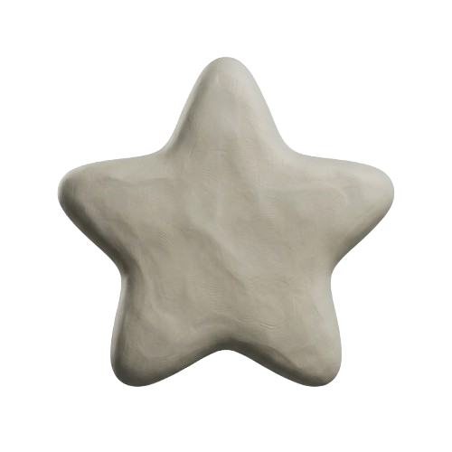
hasta una cuarta parte más de pasos
50
completado, como sea
25
Repetir sí paga… un poquito
Si vuelves a jugar un nivel y mejoras, te dan la diferencia: de 2 a 3 estrellas ganas 20 monedas
más. Repetirlo igual no da nada. Así vale la pena buscar el camino perfecto.
¡3 ESTRELLAS = 70!
seguir las piedritas da siempre 3 ★
17
CIRCUITOAYUDAS
Ayudas
La pieza que salta
Siempre hay una pieza que da saltitos con ondas de su color: es a la que tienes que ir ahora.
Cuando la pisas con la cabeza, empieza a saltar la siguiente.
Las piedritas
Bolitas de colores en el tablero que marcan un camino que funciona, con los pasos justos.
En los niveles 1 al 5 son gratis. Después se encienden con una pista.
Si te sales del camino
¡No pasa nada! Las piedritas se acomodan solas a un camino nuevo desde donde estés. Y si ya
no hay salida, el botón ↻ late: es hora de empezar de nuevo.
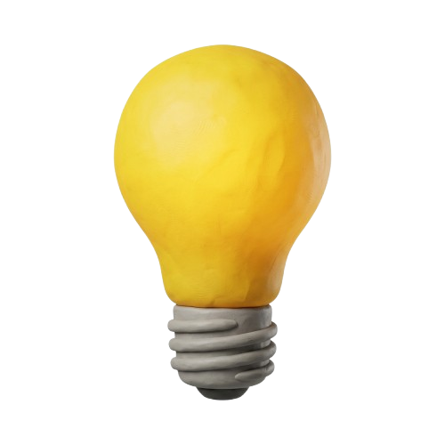
Pistas
Empiezas con 3 pistas. Toca el foco verde y aparecen las piedritas y la bandeja con el orden de
las piezas. Si se te acaban, el foco te lleva a la tienda.
La manito
En los niveles 1, 2 y 3, si te quedas quieto un ratito, aparece una mano 👆 señalando la flecha
que conviene tocar.
18
CIRCUITOTIENDA Y MAPA
La tienda y el mapa
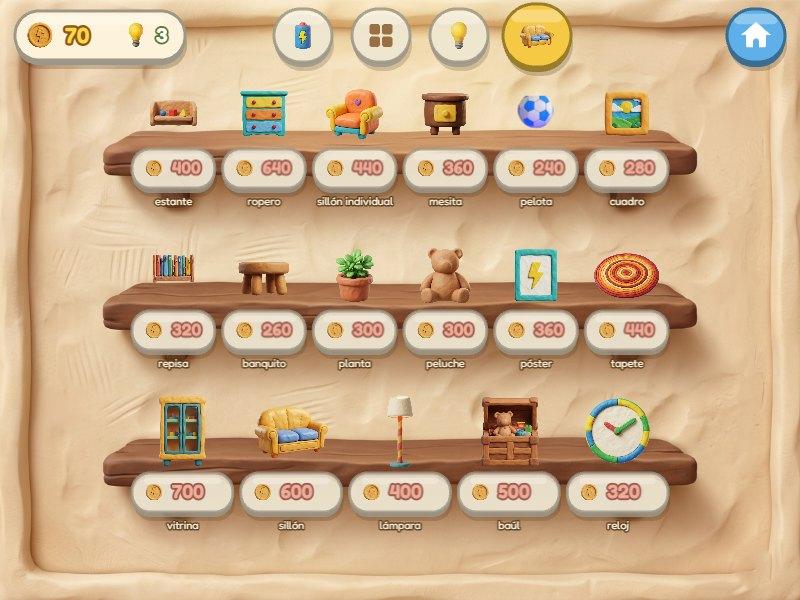
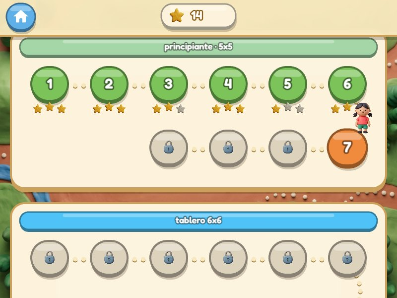
En la tienda
Qué es
Precio
Energía
más niveles para hoy (+1, +3, +5 o recarga)
60 a 450
Tablero 6×6
niveles 11 a 40: llegan los interruptores
400
Tablero 8×8
niveles 41 a 50: el capacitor y caminos largos
700
Pistas
+3 focos
120
Muebles
17 cosas para decorar tu cuarto
240 a 700
El mapa muestra cada nivel como una piedra: verde los que
ya pasaste (con sus estrellas), naranja los disponibles y gris con
candado los que faltan. Tu personaje se para encima del que te toca.
con 2 ★ de promedio alcanza para el tablero grande
19
CIRCUITOCONSEJOS
Consejos de experto
Primero la batería. Ve derecho hacia ella: los pasos que des antes no cuentan para armar el circuito.
Mira las bolitas del lomo. La distancia entre dos bolitas en el cuerpo es la misma que entre las dos piezas en el tablero.
No te encierres. Antes de entrar en una esquina, piensa por dónde vas a salir.
El LED no es el final. Después de pisarlo, da un paso más: la cabeza va vacía, delante de la luz.
Equivocarse es gratis. El ↻ no te quita nada. Los mejores lo usan mucho.
← el 4 me costó como 10 intentos descubrirlo
el nivel 50 es imposible no es imposible!!
20
⟡ ⟡ ⟡21
La página 21
Dicen que las serpientes de plastilina escriben en su propio idioma. Nadie lo descifró
todavía. Cada dibujo es una palabra, y cada palabra se arma con líneas que unen puntos…
como un circuito.
= ¿batería? = ¿luz??
Si lo descubres, escribe la traducción aquí:
21
¡A jugar!
Hecho a mano, con plastilina y cariño, en Guatemala.